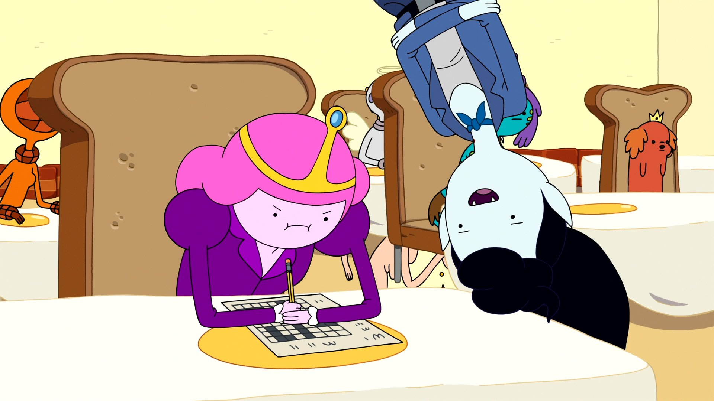

Marceline
Marceline Abadeer (full title: Marceline the Vampire Queen) is one of the main characters in Adventure Time and the main protagonist of the miniseries Stakes.
Marceline is a fun-loving and playful 1,000-year-old vampire queen. Unlike a traditional vampire, Marceline does not need to drink blood to survive; rather, she consumes the color red, or other similar tints. Marceline is also an avid musician who plays an electric bass guitar, which she crafted from her family's heirloom battle-axe. As of "Come Along With Me", Marceline and Princess Bubblegum have resumed their romantic relationship and is currently Bonnibel's girlfriend again.